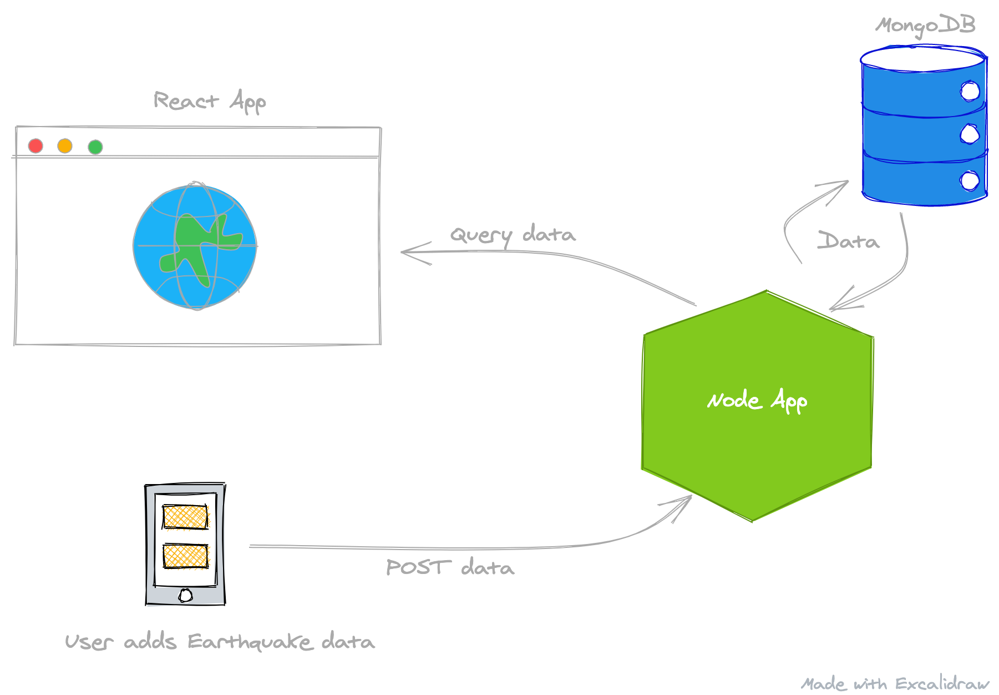

Introduction
About Me
Hi there! My name is Duane Bester. My background is in Electrical Engineering, but I have been writing professional software for over ten years now. I've been involved in various different startups with projects that have ranged from Virtual Reality-- Sensors and Hardware Design, to full stack web applications and ETL pipelines-- ingesting hundreds of thousands of articles a day. This has given me the ability to learn and use many software languages and frameworks over the years. I believe in learning by doing, so we will skip a lot of mundane programming theory and build something practical in a short amount of time.
Plot
Imagine we have data that contains GPS coordinates, like locations of earthquakes. We would like to display our data on a map in a React application. We also want to save User and Earthquake data in MongoDB (eventually using Mongo Atlas). The app will have a robust RESTful API written with the Express framework in Node.js. We will also leverage Docker to run services locally as well as for deploying this application to any cloud provider.
This book will cover getting up and running with the basics of a full-stack application:
- React
- Displaying Data with Mapbox
- Material UI
- React Components
- Loading Screens / Skeletons
- React Testing Library
- Node.js
- Express API Framework
- Middle-ware
- Testing
- User Authentication
- Express API Framework
- MongoDB
- ORM - Mongoose Driver
As well as the tools & services:
- Docker
- cURL
- VSCode
- Git & GitHub
- Cloud Providers
- Digital Ocean
- Google Cloud
- Amazon Web Services
- Mongo Atlas
At the end, I'll provide a link to the full working source code in GitHub. Let's get started!
RESTful API Basics
API
To understand what a RESTful API is, we need to understand what an API is.
API stands for "Application Programming Interface" and is "a computing interface that defines interactions between multiple software intermediaries. It defines the kinds of calls or requests that can be made, how to make them, the data formats that should be used, the conventions to follow" - Wikipedia.
We can think of an API almost as a set of rules and conditions that we expect software to adhere to. There is no magic to this-- we can define an API any way we like. Let's define a simple one:
Our API (version 1.0):
- You give me any number, and I'll return that number.
- You give me any two numbers, and I'll give you their product.
That's all it takes! The above is a totally legit API. Just a list of bullet points.
An API is just a way to define a set of rules. It was invented to allow software developers to modularize their code. You could take the above API definition, hand it to any software developer, and they can write the code that adheres to the rules.
E.g.
Input x, y:
If y is Undefined
Set y = 1
Return (x * y)
But this API isn't fool-proof... What happens if we were given something other than numbers? We can totally add or multiply 'a' and 'b', but it might not be what you expect. For example, in JavaScript:
console.log('a' + 'b');
// Returns 'ab'
console.log('a' * 'b');
// Returns NaN (Not A Number)
Luckily we can extend an API. Let's say version 1.0 is deprecated and everyone must use our newly extended API:
Our API (version 2.0):
- You give me any number, and I'll return that number.
- You give me any two numbers, and I'll give you their product.
- Can only enter numbers, entering anything else returns an error message.
E.g.
Input x, y:
If x is Undefined
Return Error
If x isNot Number
Return Error
If y is Undefined
Set y = 1
If y isNot Number
Return Error
Return x * y
The nice thing about this is you could define multiple API specifications and then stitch them all together. An API, for example, can be the bridge between two software developers. Bob is writing some code for a Math library and needs a function for multiplication. Jim has some free time and can write the multiplication code. Bob and Jim agree on an API, such that as long as Jim's code meets the API definition, we can combine the two pieces of code together when they have both finished. Modularization.
Our list of bullet-points totally works, but code is much more succinct, and can be Type checked. In Typescript, Bob can define the interface as a function. Same as our bullet-points, the function takes a number and a second optional number. It then returns a number. He can then continue on his day writing other code that would call this function:
interface IMath {
multiply: (x:Number, y?:Number) => Number
}
Jim would then write the implementation. Same as the bullet-point logic; If the type of the first input isn't a number, return an error. If the type of the second input isn't defined, we set it to 1. If the second input was defined, but it's not a number, return an error. Otherwise if all is good, return the multiplication of the two inputs:
var math:IMath = {
multiply: (x:Number, y?:Number) => {
if(typeof x !== 'number') throw new Error()
if(typeof y === 'undefined') y = 1
if(typeof y !== 'number') throw new Error()
return x * y
}
}
Bob could then use Jim's implementation in his code:
console.log(math.multiply(2)) // 2
console.log(math.multiply(2,3)) // 6
Voila, we are interface masters. just created a simple interface and the implementation of that interface... Remember that API stands for Application Programming Interface? This basically means that a whole Application has an Interface.
So a better example of an API versus just the I might look more like this:
interface IMath {
add: (x:Number, y?:Number) => Number
subtract: (x:Number, y?:Number) => Number
multiply: (x:Number, y?:Number) => Number
divide: (x:Number, y?:Number) => Number
}
REST
REST stands for "REpresentational State Transfer" and a RESTful Web service is required to provide an application access to its Web resources in a textual representation. - Wikipedia
This interpretation doesn't win awards for being clear. A RESTful API could be many things, but the community has largely accepted that sending Http Requests and Responses in a certain manner constitutes as RESTful. A RESTful API is the bridge between the "Frontend" and "Backend" code that is needed to build a web application. They communicate via the API. Backend code is usually the server that connects to a database and performs business logic on said data before sending it to a Frontend. The Frontend is usually an application that runs in the browser that makes the business logic and data make sense to users. The Frontend also handles user input and interactions. Why split the two? Again, for Modularization. The two areas have become complex enough that they require more expertise. Thus web applications are largely split.
For us to build a RESTful API we need to focus on three attributes of an Http Request:
- Method
- Path
- Body
Request Headers are important for Http, frameworks, and Auth. However, for basic RESTful model design, we won't worry about them.
Request {
Path: String
Body: String | Object
Method: String
Headers: Object
}
The Http Request Path is the URL endpoint. If we had a URL such as https://my-website.com/api/users the path would be /api/users.
Request {
Path: "/api/users"
}
The Body of an Http Request is the data the Request contains. For our purposes, this will be a JSON document with info we want to send to our service.
Request {
Body: { name: "John", age: 30 }
}
An Http Request Method is usually one of the following; GET, PUT, POST, DELETE. (There are many others, but these are the most common).
Request {
Method: "POST"
}
With the above three attributes, we can build a RESTful service for a User resource (often called a Model). The most common, and usually the default way to represent state transfer for a model is called "CRUD" which stands for Create, Read, Update, and Delete. This makes sense as if we have a User model, we would likely want to create users, retrieve users, update them, and perhaps delete them.
Say we want to get the users from our service, we'd send an Http Request with the method set to GET and the path set to /api/users:
Note that we don't need to send any info in the Body to retrieve users.
GetUsersRequest {
Path: "/api/users"
Body: {}
Method: "GET"
}
And if we wanted to create a new user:
AddUserRequest {
Path: "/api/users"
Body: { name: "John", age: 30 }
Method: "POST"
}
And if we wanted to update the user's age (we need the ID of the user in the Path):
UpdateUserRequest {
Path: `/api/users/<user-id>`
Body: { name: "John", age: 31 }
Method: "PUT"
}
And if we wanted to delete the user (we need the ID of the user in the Path):
DeleteUserRequest {
Path: `/api/users/<user-id>`
Body: {}
Method: "DELETE"
}
With the above RESTful API defined, the Frontend developers can build an application that queries for users. Similarly, the backend developers can build their code to serve up users and ways to modify users. Once both sides have completed their code, the whole system works together.
Setup API Server
For our Map project, we need a robust and easy to use API Server. Luckily Express.js fits these requirements and has a nice DSL to work with. "Express is a minimal and flexible Node.js web application framework that provides a robust set of features for web and mobile applications."
Why not Koa?
A note about Koa. Koa is robust, minimal, and widely regarded as the next Express.js framework. However, I firmly believe that for beginners it's easier to understand Express. Working through this course will definitely go a long way to understanding Koa as well.
The most basic Express app that returns "Hello world" for all GET requests is:
const express = require('express');
const app = express();
const port = 8080;
app.get('/', (req, res) => {
res.send('Hello World!')
});
app.listen(port, () => {
console.log(`Example app running on port: ${port}`)
});
I encourage you to read the overview on the Express to gain some intuition
Prerequisites
Tools
- Install Node 14 LTS
- Install Docker Desktop
- Make sure Docker is running after install!
- Install VSCode
- Install Git
- Apple ships Git with XCode, so on a mac you shouldn't need to install it.
Accounts
- Create a GitHub Account
- Create a DigitalOcean Account
- Create a Mapbox Account
Verifying Installs
Open a terminal, type and enter:
docker ps
# Returns: CONTAINER ID IMAGE COMMAND CREATED STATUS PORTS NAMES
Same terminal, type and enter:
node --version
# Returns: v14.15.5 or similar
Same terminal, type and enter:
git --version
# Returns: git version 2.24.3 (Apple Git-128)
Node Version
My local Node version at time of writing is v14.15.5
Dependencies
There is a chance you'll be using newer dependency versions, if you run into errors in the later sections, here are my Node dependency versions at time of writing:
"dependencies": {
"compression": "^1.7.4",
"cors": "^2.8.5",
"express": "^4.17.1",
"helmet": "^4.4.1",
"mongoose": "^5.11.16"
},
"devDependencies": {
"jest": "^26.6.3",
"nodemon": "^2.0.7",
"supertest": "^6.1.3"
}
Create Project
Create a new directory, map-api and then change directory into it:
mkdir map-api
cd map-api
Create an NPM project:
npm init -y
Install dependencies
Application dependencies:
npm i express cors compression helmet
Development dependencies:
npm i -D nodemon jest supertest
App files
Note: In the root directory of the project
Make a new file called index.js.
touch index.js
Make a new file called app.js.
touch app.js
Make a new file called app.test.js.
touch app.test.js
Make a new file called Dockerfile.
touch Dockerfile
Make a new file called .dockerignore.
touch .dockerignore
Make a new file called docker-compose.yml.
touch docker-compose.yml
Basic Express App
Create the App
Edit app.js:
const express = require('express');
const app = express();
app.get('/', (req, res) => {
res.send('Hello World!');
});
module.exports = app;
Edit index.js:
const app = require('./app');
// Default the port to 8080
const port = process.env.PORT || 8080;
app.listen(port, () => {
console.log(`App running on port: ${port}`)
});
Edit package.json, add a "start" property to the "scripts" object:
"scripts": {
"start": "nodemon index.js"
},
Run the App
We can now run our very basic app:
npm run start
If we go to localhost:8080, we should see Hello world! This is cool, so let's create a simple test for our API to verify this functionality.
Nodemon will watch any code changes we make and automatically reload our server.
We can stop our server from running with (Cmd or Ctrl) + C.
Test the App
Add a "jest": section to the package.json file:
"jest": {
"testEnvironment": "node",
"coveragePathIgnorePatterns": [
"/node_modules/"
]
},
And then add the "test" script to the "scripts": section of the package.json file:
"scripts": {
"start": "nodemon index.js",
"test": "NODE_ENV=test jest --runInBand --testTimeout=10000",
}
Note: the --runInBand option will tell Jest to run the tests serially in the current process
Now we add the following in app.test.js which just checks that a request to our endpoint returns a Status: 200 - Success, and the Hello World! body:
const request = require('supertest');
const app = require('./app');
describe('GET /', () => {
it('responds with Hello World', (done) => {
function hasHelloWorld(res) {
if ('Hello World!' !== res.text) throw new Error("Missing Hello World!");
}
request(app)
.get('/')
.expect(200)
.expect(hasHelloWorld)
.end(done)
});
});
We can now run the following to test our simple app (make sure server isn't running):
npm run test
We should see our test passes!
PASS ./app.test.js
GET /
✓ responds with Hello World (23 ms)
Test Suites: 1 passed, 1 total
Tests: 1 passed, 1 total
Snapshots: 0 total
Time: 0.645 s, estimated 1 s
Ran all test suites.
Onward, to creating Docker files.
Docker Files
Edit the Dockerfile:
FROM node:lts-alpine
COPY . .
RUN npm i
EXPOSE 8080
CMD [ "node", "index.js" ]
Edit the .dockerignore file:
.git
node_modules/
We are going to use a Mongo instance (v4.4) that has some Earthquake data pre-loaded.
Edit the docker-compose.yml file:
version: '3.8'
services:
mongo:
image: 'duanebester/mongo-earthquakes:latest'
container_name: 'mongo-earthquakes'
volumes:
- ./mongo-volume:/data/db
ports:
- '27017-27019:27017-27019'
At this point, we can run the following command to start up a Mongo Database!
docker-compose up -d
It will take a while, but your Mongo instance should come up. We can verify by running:
> docker ps
# Returns:
# CONTAINER ID IMAGE
# ............ mongo-earthquakes:latest
To stop the running containers, run:
docker-compose down
The nice thing about Docker Compose is that we can compose several services together. Say we also wanted to add a Postgres Database. We would do so by adding the following postgres: section below the mongo: section:
mongo:
...
postgres:
image: 'postgres:12'
container_name: 'postgresdb'
environment:
- POSTGRES_DB=map
- POSTGRES_USER=user
- POSTGRES_PASSWORD=pass
ports:
- '5432:5432'
Now we can run docker-compose up -d and docker-compose down to start and stop both Mongo and Postgres!
The up command will create and start all containers in the docker-compose.yml file.
Similarly, the down command will stop and remove all containers in the docker-compose.yml file.
To just start the Mongo container. run:
docker-compose up --no-start
docker-compose start mongo
To stop just the Mongo container:
docker-compose stop mongo
Note that this doesn't remove/delete the container, just stops it from running.
We aren't going to use Postgres, so you can stop all containers (docker-compose down) and remove the postgres: section from the docker-compose.yml file.
Removing unused Docker objects...
Sometimes after lots of development, you'll get "Out of space" warnings. Usually related to dangling volumes/images/etc. These are resources that we can remove, but then we will lose any saved data. I recommend removing these every now and then:
docker system prune
Volumes aren't removed by default, so to remove those as well:
docker system prune -a
Create GitHub Repo
Login to GitHub and Create a Repository.
Give it a name, like map-api.
I'll keep mine public and I won't create the README, .gitignore, or License files at this time.
Click Create Repository.
It will then display instructions on how to add code... Head back to VSCode. In the terminal, in the project directory, enter:
git init
# Returns: Initialized empty Git repository ...
At this point, we want to create a
.gitignorefile!
touch .gitignore
Any files or folders we list in the .gitignore will be ignored by Git and won't be pushed to our remote repository.
Edit .gitignore and add node_modules/, and mongo-volume/:
node_modules/
mongo-volume/
Then enter;
git add --all
git commit -m "First commit - basic express app"
# Returns: create mode...
git branch -M main
The instructions on GitHub will tell you to add the remote origin, something like this (replace <your-username> below):
git remote add origin git@github.com:<your-username>/map-api.git
We can now push our code to GitHub! Enter;
git push -u origin main
Now if we refresh the GitHub page with the instructions on it, it will have all of our code!
Design and Build API
One of the biggest problems with software today is that people do not spend enough time in the "design" phase. It has become easier to iterate and change code, but if we spend some extra time in the beginning to think through our system, we will mitigate a lot of potential changes.
Why Mongo?
Mongo is a NoSQL database, which mostly means it is more free-form and offers us some flexibility in the prototyping phase. It also has a nice way to query and aggregate with GPS coordinates. Mongo documents are essentially JSON documents, so Mongo works well with JavaScript based applications.
So right now our system might be something like this:

We can then think of what we want our API endpoints to look like. For retrieving Earthquakes, perhaps something like:
| Operation | Request Method | Request Path | Response Status | Response Body |
|---|---|---|---|---|
| Get Quakes | GET | /api/<version>/earthquakes | 200 | [Earthquake] |
And if we wanted to limit the amount of earthquakes returned, we can add a limit query param to the path of the above:
/api/<version>/earthquakes?limit=10
And to paginate through our earthquakes, a skip query param:
/api/<version>/earthquakes?limit=10&skip=10
To find earthquakes near a certain coordinate, we could setup a long,lat query param called near:
/api/<version>/earthquakes?near=[longitude,latitude]
We could also pass min and max distances (from above GPS point) as query params, but for now we will just let the API default those to something reasonable.
It's usually best practice to version API's. We can then support multiple versions of the Get Earthquakes endpoint.
For "CRUD" (Creating, Retrieving, Updating and Deleting) Users, a flushed out API might look like this:
The
5in the Request Path below represents the User's ID
| Operation | Request Method | Request Body | Request Path | Response Status | Response Body |
|---|---|---|---|---|---|
| Get Users | GET | /api/v1/users | 200 | [User] | |
| Get User By ID | GET | /api/v1/users/5 | 200 | User | |
| Create User | POST | User | /api/v1/users | 201 | User |
| Update User | PUT | User | /api/v1/users/5 | 200 | User |
| Delete User | DELETE | /api/v1/users/5 | 204 |
Connect Mongo
Remember to have Mongo running via Docker (
docker-compose up -d)!
To connect to our instance of Mongo running locally we are going to install and use the Mongoose library:
npm install mongoose
We then make a file db.js with the following:
const mongoose = require('mongoose')
function connect(dbUrl) {
mongoose.set('useNewUrlParser', true)
mongoose.set('useFindAndModify', false)
mongoose.set('useCreateIndex', true)
mongoose.set('useUnifiedTopology', true)
mongoose.connect(dbUrl)
}
function close() {
mongoose.connection.close()
}
const db = {
connect,
close
};
module.exports = db
If we want to get more info about the Database connection, we can add the following into our connect function:
function connect(dbUrl) {
// ...previous code...
mongoose.connection.once('open', () => {
console.log('Connected to database');
});
mongoose.connection.on('error', err => {
console.error(err);
console.log('MongoDB connection failed: ' + dbUrl);
process.exit();
});
}
We need to require our db instance in our index.js file:
const db = require('./db');
db.connect('mongodb://localhost:27017/map');
Now when we start our app (npm run start) we will see this:
...
[nodemon] starting `node index.js`
App running on port: 8080
Connected to database
Connected to database!
Note: Don't worry about any warnings for now.
Let's define some Schemas for our Models with Mongoose!
Models
A User, to us, might need properties such as:
- First Name
- Last Name
But what about on the backend? We'd probably also need:
- ID
- Password
- Date Created
- Date Updated
And perhaps we'd like to support User sessions?
- Session ID
And tracking the User's last login?
- Last Login Date
And supporting forgot password flows?
- Phone Number
- Email Verified
- Verification Code
The list goes on and on... For now, let's start simple:
User
- ID
- Password
- Favorites (list of Earthquakes)
Earthquake
- ID
- Year
- Area
- Scale
- Location
- Latitude
- Longitude
Schemas & Models
We will build the Earthquake schema first, following the guide from Mongoose geo-JSON docs. Create a file called models.js:
const mongoose = require('mongoose');
const { Schema } = mongoose;
const earthquakeSchema = new Schema({
source: String,
year: Number,
area: String,
scale: Number,
location: {
_id: false,
type: {
type: String,
enum: ['Point'],
required: true
},
coordinates: {
// longitude, latitude
type: [Number],
required: true
}
}
});
Note that longitude comes before latitude in the coordinate array.
Our Earthquake Model can be defined like so:
const Earthquake = mongoose.model('Earthquake', earthquakeSchema, 'earthquakes');
Now we can build our User Schema and Model:
const userSchema = new Schema({
email: {
type: String,
required: true,
unique: true
},
password: {
type: String,
required: true
},
favorites: [{
type: Schema.Types.ObjectId,
ref: 'Earthquake',
}],
}, { timestamps: true });
const User = mongoose.model('User', userSchema);
Note: The
{ timestamps: true }config object tells Mongoose to automatically addcreatedAtandupdatedAttimestamps to our Model.
And finally export both Models:
module.exports = { User, Earthquake };
Routing
From our design section, our User routes will look like so:
| Operation | Request Method | Request Body | Request Path | Response Status | Response Body |
|---|---|---|---|---|---|
| Get Users | GET | /api/v1/users | 200 | [User] | |
| Get User By ID | GET | /api/v1/users/:id | 200 | User | |
| Create User | POST | User | /api/v1/users | 201 | User |
| Update User | PUT | User | /api/v1/users/:id | 200 | User |
| Delete User | DELETE | /api/v1/users/:id | 204 |
Which we can represent using Express' DSL.
But first, let's import our User model into app.js:
const express = require('express');
const { User } = require('./models');
const app = express();
Now we can add our routes for Users:
app.get('/users', (req, res) => {
const users = await User.find({});
res.status(200).send(users)
})
app.get('/users/:id', (req, res) => {
const id = req.params.id;
const user = await User.findOneById(id);
res.status(200).send(user)
})
app.post('/users', (req, res) => {
const newUser = await User.create(req.body);
res.status(201).send(newUser)
})
app.put('/users:id', (req, res) => {
const id = req.params.id;
const newUser = await User.findByIdAndUpdate(id, req.body);
res.status(200).send(updatedUser)
})
app.delete('/users/:id', async (req, res) => {
const id = req.params.id;
await User.findByIdAndRemove(id);
res.status(204).send()
})